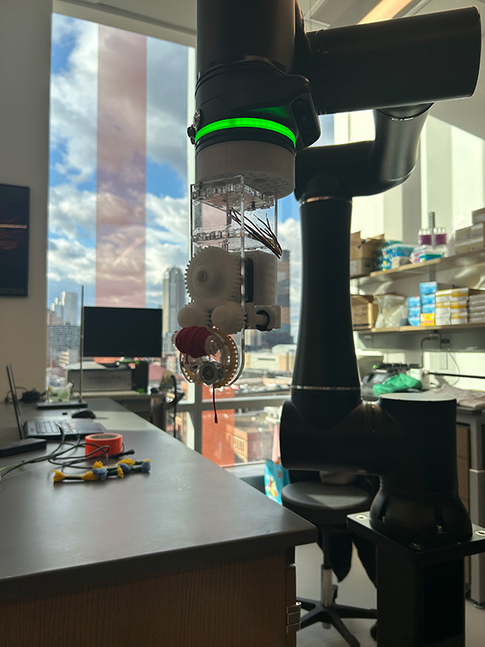

Senior Capstone Project
Project Timeline: Fall 2025
Overview
Robot-assisted construction of fibrous materials. This project represents the culmination of my
undergraduate mechanical engineering education, combining robotics, mechanical design, and biomedical
engineering principles.

Academic Sponsor
UPMC Laboratory of Ocular Biomechanics
Project Goals
- Develop a robotic system for precise manipulation of fibrous materials
- Design custom end effector for material handling
- Implement automated construction processes
- Ensure biocompatibility and precision for ocular applications
Technologies Used
- Robotics and automation systems
- CAD design (SolidWorks/Fusion 360)
- Material science and biomechanics
- Control systems and programming
Current Status
This project is currently in progress as part of my senior year capstone. More details and results
will be added as the project develops.